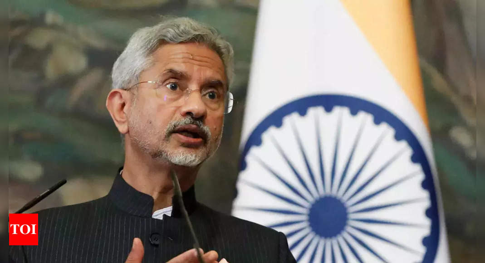

India-China LAC News: Standing Up Against China's Aggression
Image Credits https://m.timesofindia.com/india/india-stood-up-to-chinas-lac-adventurism-delegitimised-pak-terror-eam-s-jaishankar/articleshow/100859884.cms
Recently, India's External Affairs Minister S Jaishankar spoke on India's stance on the ongoing border standoff with China along the Line of Actual Control (LAC). He highlighted India's determination to stand up against China's adventurism and also stressed on how India has successfully delegitimised Pakistan's state-sponsored terrorism. This statement comes at a time when India and China are trying to find a diplomatic solution to the LAC issue that arose in May 2020.
India's Response to China's Aggression
India has been firm on its stance that China's aggression along the LAC was uncalled for and a breach of trust. India has responded to China's aggression with equal measures, not backing down from its position. Recently, India banned 118 Chinese apps, including the popular game PUBG, citing security concerns. India has also taken measures to reduce its reliance on Chinese imports, including imposing higher tariffs on Chinese goods and encouraging domestic manufacturing.
Case Studies

Galwan Valley Clash
The Galwan Valley clash on June 15, 2020, was a turning point in India-China relations. Despite several rounds of military-level talks, China refused to withdraw its troops and continued to construct military infrastructure in the region. In the clash, India lost 20 soldiers, while China suffered an unknown number of casualties. The clash resulted in a massive anti-China sentiment within India.

India's Response to China's Infrastructure Development
India has responded to China's infrastructure development along the LAC by improving its own infrastructure. India has been constructing new roads and bridges in the region to better connect its border areas. This move has not only improved connectivity but also strengthened India's position along the LAC.

India's Ban on Chinese Apps
India's ban on Chinese apps, including the popular app PUBG, has been a significant move in reducing India's dependence on Chinese technology and products. The ban has been backed by concerns over data privacy and national security.
Conclusion
India's response to China's aggression along the LAC has been firm and strategically planned. It has taken political, diplomatic, and economic measures to counter China's advances and establish a stronger position along the LAC. India's dialogue with China is still ongoing, but India's position is clear that it will not back down from its stance. The current situation has highlighted the need for India to strengthen its diplomatic ties with other countries and reduce its reliance on China in various fields.
Curated by Team Akash.Mittal.Blog
Share on Twitter Share on LinkedIn